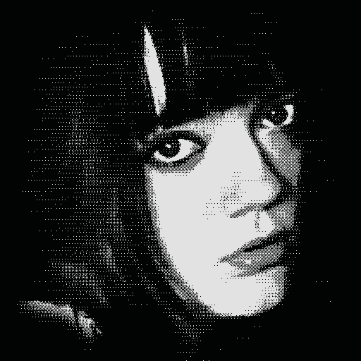

__ __ ____ ___ __/ /_ ____/ /__ _________ / __ `/ / / / __ \/ __ / _ \/ ___/ __ \ / /_/ / /_/ / /_/ / /_/ / __/ / / /_/ / \__,_/\__,_/_.___/\__,_/\___/_/ \____/
Hi! I'm Aubrey DeRobertis, a second-year IT Management student at the Scheller College of Business at Georgia Tech. My professional interests include business analysis, product workflows, and UI/UX design. Outside of the classroom, I am a multimedia creative involved in photography, illustration, writing, and aerial sports.